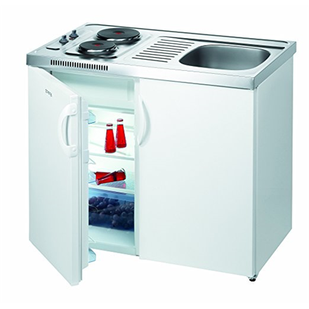

Welcome to Virtuvė
Virtuvės baldai internetu - už patrauklią kainą | Baldai PL
2020.10.28 08:06+370 68470444 info@baldaipl.lt Darbo laikas: I-V 9:00-18:00 Kontaktai Apie mus Pristatymas Taisyklės Baldai Visi Batų dėžės Čiužiniai Foteliai Kampai Kėdės Komodos Lentynos Lovos Miegamojo komplektai Prieškambario komplektai Rūbų kabyklos Sekcijos Sofos lovos Spintos Stalai Stalų ir kėdžių komplektai Virtuvės komplektai Staliukai Svetainė Komplektai Konsolės staliukai Kėdės Kolekcijos Komodos Lentynos Sekcijos Spintelės Spintos Stalai Staliukai TV staliukai Veidrodžiai Vitrinos Miegamasis Antčiužiniai, čiužinių užvalkalai Kolekcijos Tualetiniai staliukai Čiužiniai Komodos Komplektai Lovos Kontinentinės Lovos Lovų grotelės Naktiniai staliukai Spintos Veidrodžiai Vaikų kambarys Čiužiniai Kompiuterio Kėdės Vaikų kambario baldų komplektai Kolekcijos Komodos Lentynos Lovos Rašomieji stalai Spintelės Spintos Stalai ir staliukai Kėdės Vonia Vonios baldų kolekcijos Vonios Baldų Komplektai Pastatomos vonios spintelės Pakabinamos vonios spintelės Virtuvė Indaplovių durelės Komplektai Kriauklės virtuvei Medžiagos Stalviršiai Virtuvinės Sienelės Kolekcijos Baro kėdės Baro staliukai Spintelės Stalai Stalų ir kėdžių komplektai Kėdės Minkšti baldai Komplektai Pufai Foteliai Kampai Sofos lovos Biuro baldai Darbo , biuro kėdės Kolekcijos Rašomieji stalai Biuro stalai Prieškambaris Prieškambario baldų kolekcijos Prieškambario komplektai Prieškambario Spintos Suoliukai Batų dėžės Rūbų kabyklos Kontaktai Apie mus Pristatymas Taisyklės Nemokamas
pristatymas Atsiskaitymas grynais
arba kortele Saugus
pirkimas Pirkimas
lizingu Prisijungti 0 | 0.00 €
Jūsų prekių krepšelis tuščias
0 | 0.00 € Baldai Visi Batų dėžės Čiužiniai Foteliai Kampai Kėdės Komodos Lentynos Lovos Miegamojo komplektai Prieškambario komplektai Rūbų kabyklos Sekcijos Sofos lovos Spintos Stalai Stalų ir kėdžių komplektai Virtuvės komplektai Staliukai Svetainė Komplektai Konsolės staliukai Kėdės Kolekcijos Komodos Lentynos Sekcijos Spintelės Spintos Stalai Staliukai TV staliukai Veidrodžiai Vitrinos Miegamasis Antčiužiniai, čiužinių užvalkalai Kolekcijos Tualetiniai staliukai Čiužiniai Komodos Komplektai Lovos Kontinentinės Lovos Lovų grotelės Naktiniai staliukai Spintos Veidrodžiai Vaikų kambarys Čiužiniai Kompiuterio Kėdės Vaikų kambario baldų komplektai Kolekcijos Komodos Lentynos Lovos Rašomieji stalai Spintelės Spintos Stalai ir staliukai Kėdės Vonia Vonios baldų kolekcijos Vonios Baldų Komplektai Pastatomos vonios spintelės Pakabinamos vonios spintelės Virtuvė Indaplovių durelės Komplektai Kriauklės virtuvei Medžiagos Stalviršiai Virtuvinės Sienelės Kolekcijos Baro kėdės Baro staliukai Spintelės Stalai Stalų ir kėdžių komplektai Kėdės Minkšti baldai Komplektai Pufai Foteliai Kampai Sofos lovos Biuro baldai Darbo , biuro kėdės Kolekcijos Rašomieji stalai Biuro stalai Prieškambaris Prieškambario baldų kolekcijos Prieškambario komplektai Prieškambario Spintos Suoliukai Batų dėžės Rūbų kabyklos Patarimai DUK Kambarių dizainas Naujienos Kontaktai Apie mus Pristatymas Taisyklės Prisijungti / Registruotis Visi Batų dėžės Čiužiniai Foteliai Kampai Kėdės Komodos Lentynos Lovos Miegamojo komplektai Prieškambario komplektai Rūbų kabyklos Sekcijos Sofos lovos Spintos Stalai Stalų ir kėdžių komplektai Virtuvės komplektai Staliukai Svetainė Komplektai Konsolės staliukai Kėdės Kolekcijos Komodos Lentynos Sekcijos Spintelės Spintos Stalai Staliukai TV staliukai Veidrodžiai Vitrinos Miegamasis Antčiužiniai, čiužinių užvalkalai Kolekcijos Tualetiniai staliukai Čiužiniai Komodos Komplektai Lovos Kontinentinės Lovos Lovų grotelės Naktiniai staliukai Spintos Veidrodžiai Vaikų kambarys Čiužiniai Kompiuterio Kėdės Vaikų kambario baldų komplektai Kolekcijos Komodos Lentynos Lovos Rašomieji stalai Spintelės Spintos Stalai ir staliukai Kėdės Vonia Vonios baldų kolekcijos Vonios Baldų Komplektai Pastatomos vonios spintelės Pakabinamos vonios spintelės Virtuvė Indaplovių durelės Komplektai Kriauklės virtuvei Medžiagos Stalviršiai Virtuvinės Sienelės Kolekcijos Baro kėdės Baro staliukai Spintelės Stalai Stalų ir kėdžių komplektai Kėdės Minkšti baldai Komplektai Pufai Foteliai Kampai Sofos lovos Biuro baldai Darbo , biuro kėdės Kolekcijos Rašomieji stalai Biuro stalai Prieškambaris Prieškambario baldų kolekcijos Prieškambario komplektai Prieškambario Spintos Suoliukai Batų dėžės Rūbų kabyklos Patarimai DUK Kambarių dizainas Naujienos Pradžia Baldai Virtuvė Filtrai Standartinė Pavadinimas (A - Z) Pavadinimas (Z - A) Kaina (Žema Aukšta) Kaina (Aukšta Žema) Įvertinimai (Aukščiausi) Įvertinimai (Žemiausi) Prekės kodas (A - Z) Prekės kodas (Z - A) Rūšiuoti pagal: 15 25 50 75 100 Rodyti: Akcija Indaplovių durelės Komplektai Kriauklės virtuvei Medžiagos Stalviršiai Virtuvinės Sienelės Kolekcijos Baro kėdės Baro staliukai Spintelės Stalai Stalų ir kėdžių komplektai KėdėsVirtuvės baldai
Virtuvė – tai bene labiausiai naudojama namų erdvė, kurioje kasdien susirenka visi šeimos nariai. Kuriant virtuvės interjerą svarbu, kad šis būtų ne tik gražus, bet ir funkcionalus, pritaikytas prie gyventojų poreikių. Šiame lenkiškų baldų parduotuvės „BaldaiPL“ kataloge galite rasti platų stilingų ir praktiškų virtuvės baldų pasirinkimą. Taip pat drąsiai kreipkitės į mus, jei jums aktualus virtuvės baldų projektavimas. Padėsime įkurti erdvę, kurioje ne tik patogu gaminti maistą, bet ir bendrauti su šeima bei svečiais.
Ką siūlome?
Lenkiški virtuvės baldai – tai praktiškas pasirinkimas už patrauklią kainą. Pas mus galite rasti įvairius baldus tiek mažai, tiek ypač erdviai virtuvei: nuo specialių komplektų iki pavienių medžiagų ir baldų norintiems atnaujinti virtuvės dizainą. Klientams taip pat galime pasiūlyti ir specialias dizainerių kurtas virtuvės baldų kolekcijas . Čia rasite viską, ko tik gali prireikti norint įsikurti jaukią ir funkcionalią aplinką maistui gaminti.
Kataloge pateikiame didelį stalviršių pasirinkimą. Rinkitės iš itin plačios spalvų paletės ir derinkite atspalvius prie bendro virtuvės interjero dizaino. Stalviršių gamyboje naudojamos laminuotos medžio drožlių plokštės (LMDP), todėl pagrindinis stalviršio privalumas – atsparumas karščiui bei lengvas jo valymas.
Siūlome ne tik komplektus, bet ir atskiras baldų dalis, pavyzdžiui, lentynas, virtuvines spinteles . Mūsų elektroninėje parduotuvėje eksponuojami lenkiški virtuvės baldai skirti ne vien virtuvės patalpai. Taip pat pas mus rasite platų baro baldų pasirinkimą, tarp jų – baro staliukai ir specialios kėdės.
Ieškote valgomojo baldų, o gal reikalingas ir virtuvės baldų projektavimas? Turime ką pasiūlyti: šie gali būti sukomplektuoti kartu su asortimente esančiomis derančiomis kėdėmis bei stalais arba pasirenkami atskirai. Didžioji dalis stalų gaminami iš dažyto plieno bei stiklo. Tai užtikrina produkcijos ilgaamžiškumą, aukštą kokybę ir išskirtinį dizainą . Rinkitės valgomojo baldus, pagamintus iš medžio masyvo arba faneros.
Bendruosius produkcijos išmatavimus – aukštį, gylį ir plotį – galite rasti pasirinkę konkretų baldą. Taip pat prie prekės aprašymo rasite pagrindines gamybai naudotas priemones ir galimą spalvų paletę. Drąsiai kurkite virtuvės aplinką pasitelkę vaizduotę ir kūrybiškumą.
Virtuvės baldų projektavimas
Svajojate apie tobulą virtuvę, tačiau sunku sukurti visus lūkesčius patenkinantį dizainą patiems? Ne bėda! Kreipkitės į mūsų specialistus: padėsime įgyvendinti jūsų svajonę, užtikrinsime galutinio rezultato patogumą bei funkcionalumą.
Labai svarbu pabrėžti , kad sudarydami komplektus naudojame tik elektroniniame kataloge esančias prekes, spalvas ir dydžius. Atsižvelgiame į jūsų pateiktus norus, matmenis, tačiau pagal individualius užsakymus, kuriems reikia projektuoti naujus baldus, virtuvių komplektų negaminame. Jei žavi „Baldai PL“ asortimente pateikti virtuvės baldai – susisiekite ir mes viską suderinsime.
Nuo ko pradėti virtuvės įrengimą?
Nesvarbu, ar tai darote patys, ar pasirenkamas virtuvės baldų projektavimas – rekomenduojame įvertinti ne tik savo poreikius, bet ir galimybes. Derėtų atsižvelgti į:
Virtuvės dydį ir planą . Pavyzdžiui, kaip išdėstyti langai, durys, vandens tiekimo sistema, dujotiekis, elektros lizdai ir t. t. Maisto gaminimo dažnumą . Nuo to priklausys, kokio pločio stalviršių reikės, kur reikės įrengti apšvietimą. Šeimos dydį . Logiška, kad kuo dažniau ir daugiau gaminate, tuo daugiau laisvos vietos prireiks. Be to, nuo to priklausys ir specifinių baldų, pavyzdžiui, kėdžių, skaičius.Atsižvelgę į šiuos niuansus, lengviau atrinksite būtiniausius virtuvės baldus, kokių ir kiek jų reikia, o taip pat ir suplanuosite patogiausią jų išdėstymo planą. Įvertinus patalpos dydį, dažniausiai patariama rinktis virtuvės komplektus, mat jie apima visus reikiamus baldus. Be to, juos galima pritaikyti tiek mažesnei, tiek didesnei erdvei, sustatyti taip, kaip patogu jums.
Kodėl verta rinktis mus?
Mūsų parduodami lenkiški virtuvės baldai atkeliauja į namus tiesiai iš gamintojo. Be to, nereikalaujame jokio avanso mokesčio. Baldų asortimentą atnaujiname dažnai, todėl pas mus visada rasite naujų, madingų pasiūlymų. Užtikriname nemokamą produkcijos pristatymą visoje Lietuvoje, suteikiame 2 metų garantiją visiems baldams. Apsipirkite drąsiai – baldaipl.lt visuomet rasite ir virtuvės stiliaus idėjų, patarimų, ir baldų, aksesuarų joms įgyvendinti.
Kontaktai Apie mus Pristatymas Taisyklės Svetainės žemėlapisBendraukime:
Gaukite naujausius Pasiūlymus pirmieji © Uab baldai pl 2016 Baldai PL